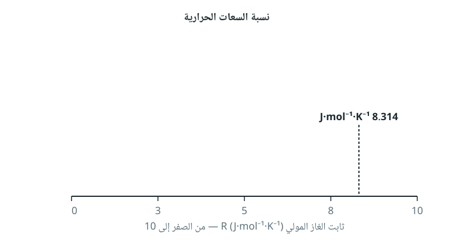

نسبة السعات الحرارية
Heat capacity ratio
نسبة السعات الحرارية هي نسبة السعة الحرارية عند ضغط ثابت إلى السعة الحرارية عند حجم ثابت، ورمزها γ، وتحدد سلوك الغاز في العمليات الأدياباتية وسرعة الصوت فيه.
نسبة السعات الحرارية γ، وتُسمّى أيضاً معامل الأديابات، هي السعة الحرارية عند ضغط ثابت مقسومة على السعة الحرارية عند حجم ثابت: γ = c_p/c_v. وللغاز المثالي الأحادي الذرة γ = 5/3 = 1.667، وللثنائي الذرة γ = 7/5 = 1.400 عند درجات الحرارة العادية، وللمتعدد الذرات γ ≈ 1.33. وتظهر في العلاقات الأدياباتية: pV^γ = ثابت، وT·V^(γ−1) = ثابت، وسرعة الصوت a = √(γRT/M). مثال: الهواء γ = 1.400 وM = 0.028 964 kg/mol، فعند 293.15 K تكون سرعة الصوت a = √(1.400 × 8.314 462 618 × 293.15/0.028 964) = 343.2 m/s.
كيف تعمل الظاهرة؟
الفرق بين c_p وc_v ينشأ من العمل الميكانيكي. عند تسخين الغاز في حجم ثابت، تذهب كل الحرارة إلى زيادة الطاقة الداخلية، أي إلى زيادة حركة الجزيئات. وعند تسخينه في ضغط ثابت، يتمدد الغاز فيبذل عملاً على المحيط، فتحتاج الحرارة الإضافية إلى تغطية هذا العمل أيضاً. لذلك c_p أكبر من c_v دائماً، والفرق بينهما للغاز المثالي يساوي R بالضبط. ونسبة السعات تعبّر عن «كم من الطاقة يذهب إلى العمل مقابل الطاقة الداخلية»، وهي محكومة بعدد درجات الحرية: كل درجة حرية تسهم بنصف R في c_v، وكلما زادت الدرجات قلّت γ واقتربت من الواحد.
العلاقة بالأرقام
γ = c_p/c_v = 1 + 2/f، وc_p − c_v = R. وللغاز المثالي: أحادي الذرة f = 3 → γ = 1.667؛ ثنائي الذرة f = 5 → γ = 1.400؛ متعدد الذرات f = 6 → γ = 1.333. والعلاقات الأدياباتية: pV^γ = ثابت، TV^(γ−1) = ثابت، Tp^((1−γ)/γ) = ثابت. وسرعة الصوت a = √(γRT/M). مثال عددي: الهواء عند 293.15 K → a = 343.2 m/s؛ وضغط أدياباتي 1→4 bar → T₂ = 293.15 × 4^0.2857 = 435.6 K.
مفاهيم متقاربة
يُفرَّق بين γ وc_p وc_v: γ نسبة بلا وحدة، والسعتان كميتان بالجول لكل كلفن. ويُفرَّق بين γ ومعامل الأديابات في العمليات الحقيقية: في الضاغط الفعلي لا تكون العملية أدياباتية قابلة للعكس، ويُستعمل الكفاءة الأدياباتية بدل γ وحدها. ويُفرَّق بين γ ومعامل بواسون ν في الميكانيكا: الأخير نسبة الانفعال العرضي إلى الطولي في المواد الصلبة، والاثنان يُرمزان أحياناً بالحرف نفسه في نصوص مختلفة، وهو مصدر خلط. والخطأ الشائع أن يُستعمل γ = 1.4 للغازات المحترقة عند 1500 K؛ عندها تنشط الأنماط الاهتزازية وينخفض γ إلى نحو 1.30.
حدود التطبيق
العلاقات الأدياباتية pV^γ = ثابت صالحة للغاز المثالي في عملية أدياباتية قابلة للعكس. في العمليات الحقيقية توجد حرارة منتقلة واحتكاك، فتلزم الكفاءة الأدياباتية. وγ ليست ثابتة مع درجة الحرارة: تنخفض بارتفاع الحرارة حين تُثار الأنماط الاهتزازية، وترتفع عند درجات منخفضة جداً حين تتجمد درجات الحرية الدورانية. وفي الغازات الحقيقية قرب التشبّع تنحرف العلاقات عن الصيغة المثالية. وأخيراً في الخلائط تُحسب γ من السعات الموزونة بالكسور المولية، ولا تُؤخذ نسبة بسيطة من نسب المكونات.

| الكمية | القيمة | المصدر |
|---|---|---|
| ثابت الغاز المولي R | 8.314 462 618 J·mol⁻¹·K⁻¹ | [1] |
| سرعة الصوت في الهواء عند 293.15 K | 343.2 m/s | [1] |
المصادر
- 1 CODATA Value: molar gas constant — NIST — CODATA 2022 recommended values (2024). physics.nist.gov/cgi-bin/cuu/Value?r · اطُّلع عليه 2026-11-21
- 2 CODATA Value: Boltzmann constant — NIST — CODATA 2022 recommended values (2024). physics.nist.gov/cgi-bin/cuu/Value?k · اطُّلع عليه 2026-11-21
- 3 CODATA Value: Avogadro constant — NIST — CODATA 2022 recommended values (2024). physics.nist.gov/cgi-bin/cuu/Value?na · اطُّلع عليه 2026-11-21
استشهد بهذا المصطلح
الصيغتان مبنيتان من بيانات الصفحة نفسها: العنوان والتاريخ ورابط النسخة المنشورة.
نسبة السعات الحرارية — Heat capacity ratio. (2026). ديوان المعرفة — انفراد. https://infiradev.com/diwan/terms/term-heat-capacity-ratio.html
@misc{term-heat-capacity-ratio2026,
title = {نسبة السعات الحرارية},
titleaddon = {Heat capacity ratio},
howpublished = {{ديوان المعرفة — انفراد} — مرجع علمي عربي},
year = {2026},
url = {https://infiradev.com/diwan/terms/term-heat-capacity-ratio.html},
urldate = {2026-11-26},
note = {مراجعة علمية: hermes (مراجعة معتمدة 2026-11-26)}
}
راجعه: hermes (مراجعة معتمدة 2026-11-26) · 2026-11-26 · آخر تحديث 2026-11-21